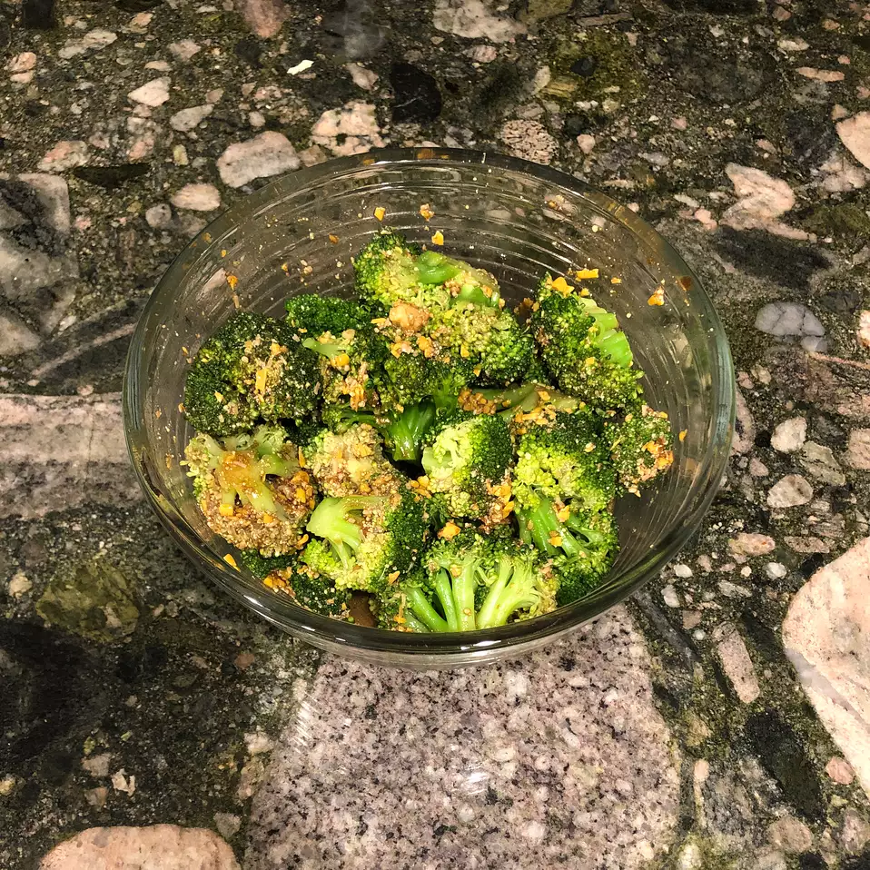

Garlic Broccoli

Description
This salad is made with marinated raw broccoli in a garlicky sauce for numnums! A recipe from my grandma.
Ingredients
- 4 cloves garlic, peeled
- 11/2teaspoons salt
- 1 bunch broccoli, cut into florets
- 1/3cup olive oil
- 1/4cup red wine vinegar
- 1 tablespoon Dijon mustard
- 1/2cup grated Parmesan cheese, or to tase
Preparation Steps
- Place garlic in a mortar dish or on a cutting board, and sprinkle with salt. Mash with a pestle, or use the flat side of a knife to mash garlic and salt into a paste. Transfer to a medium bowl, and stir in olive oil, vinegar, and mustard. Add the broccoli, and stir to coat. Chill for 3 hours to marinate, stirring occasionally. Sprinkle with Parmesan cheese before serving.